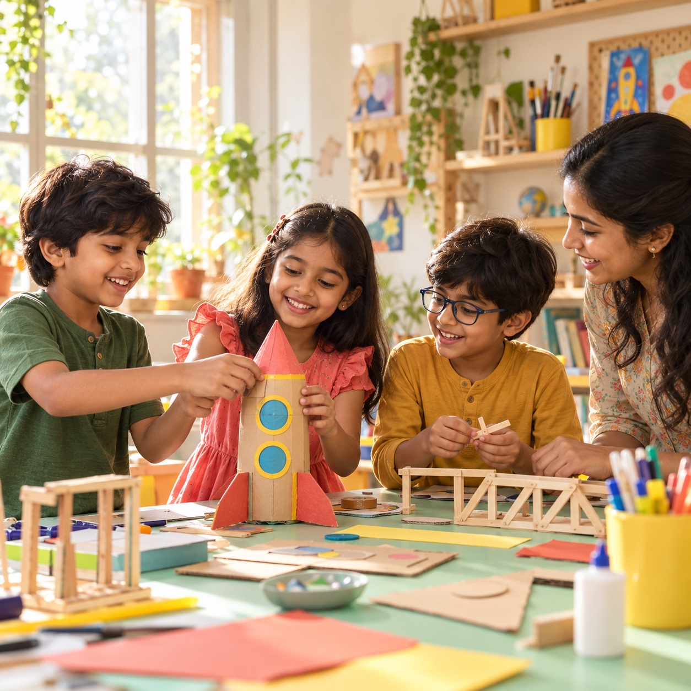

A little curious.
A lot possible.
For the scientist, artist, storyteller, and dreamer in your child. Discover a world beyond school — all in one happy neighbourhood hub.
Made for curious minds. Ages 3–15.
Thoughtfully designed for parents, too.

A place to try. A space to shine.Tomorrow’s big idea.
BE YOU.✦
So many ways to wonder.
New interests. Favourite hobbies. A little bit of everything.
More “look what I made!”
Their world gets bigger.
Your day gets simpler.
One hub. Many possibilities. We bring the joy of discovery and the structure of regular learning together, close to home.
A thoughtful path, not just another class
Age-fit activities help children explore, build skills, and keep growing at their own pace.
Care is part of the curriculum
Our operating approach puts verified instructors, supervised sessions, and authorized pickup first.
All their interests. One easy plan.
Explore programmes, plan your week, and choose a membership in one place.
A week full of possibilities.
Find an adventure that fits your child — and your calendar.
A plan for every kind of curious.
One neighbourhood hub for new interests, growing skills, and a week filled with discovery.
Indicative pilot pricing. Membership selections are saved on this device; no payment is collected. Final inclusions and terms will be confirmed before launch.
Hello, Hyderabad.
Let’s grow curious together.
We’re starting where children already feel at home: a partner school. Next come neighbourhood hubs, flagship centres, and a thoughtfully built franchise network.
to your neighbourhood.⌖ Hyderabad, Telangana
Curious? Good.
Here’s a little clarity before the adventure.
Who is CurioHub for?
Children ages 3–15, with distinct groups for ages 3–6, 6–10, and 10–15. Programme age recommendations help you choose the right fit. At shared boundaries, choose based on your child’s readiness.
Can we try a class before choosing a plan?
Yes. The planned model includes individual sessions and discovery workshops alongside memberships. Explore the preview schedule and save a trial request; actual bookings will open when the pilot schedule is confirmed.
Where will the Hyderabad pilot take place?
The pilot is planned with a partner school in Hyderabad. The school, address, opening date, and final timetable have not yet been announced. Express interest to prepare your launch enquiry.
How do you approach safety and pickup?
The operating plan includes instructor verification, controlled arrival and authorized release, supervised activities, and transparent incident communication. Venue-specific arrangements will be shared before enrolment.
Can my school or community partner with CurioHub?
School and community partnerships are part of our expansion model. Share your interest below. Franchise centres are a later phase after the operating model has been validated.
Let their curiosity take flight.
A new interest. A new friend. A new “I can do this.”